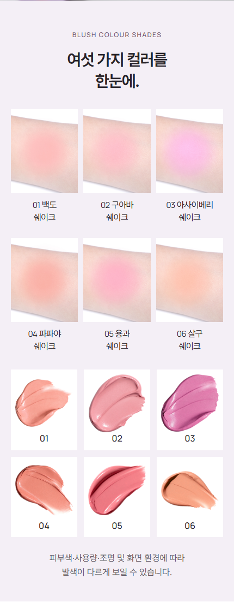
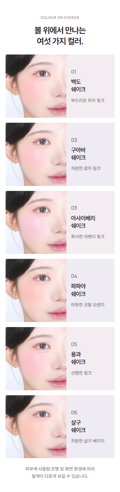
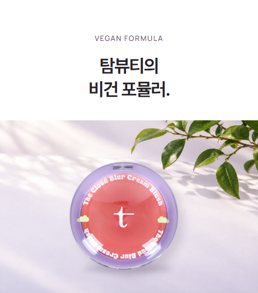

TAM BEAUTY · CLOUD BLUSH · V7 / 2026.10.20
레퍼런스 순서대로 조립하고,
탐뷰티의 자료로 채웠습니다.
카페24 구성 미리보기 ↗등록 준비 ZIP프레시안 공식 원문 ↗기획·문안 근거 기록출력 검증 기록
왜 이 순서인가
선정한 프레시안 원본의 제품 소개 → 전체 색 비교 → 개별 얼굴 발색 → 제형 → 성분 → 사용법 → 비건 → 확인사항 흐름을 적용했습니다. 전체 비교는 색의 차이를, 얼굴 사진은 개별 착용 결과를 보여줍니다. 같은 사진을 두 역할에 중복 사용하지 않았습니다.
| 원본 구간 | 탐뷰티 적용 | 근거 |
|---|---|---|
| 01 | 제품명과 크림투파우더 USP 인지 기존 히어로 유지 + 원본 6종 제품 사진 1회 | 기존 TAM 히어로와 사용자 확인 제형 |
| 03 | 여섯 색 전체를 한 화면 단위에서 비교 손목 3열×2행, 제형 3열×2행; 서로 다른 사진을 한 팔처럼 합성하지 않음 | 공식 6종명, 제공 손목 사진, 제공 제형 사진 |
| 04–06 | 각 색이 얼굴에서 보이는 결과 확인 얼굴 왼쪽/색상 설명 오른쪽의 큰 가로 행 6개; AI 발색·색 보정 없음 | 제공 외주 발색 1차 세트 전체; 실물 색 검수 미완료 |
| 07 | 바를 때의 크림과 보송한 마무리의 차이 전달 원본 0.3–1.5초 짧은 GIF; 연속 변환 실험으로 주장하지 않음 | 사용자 제형 설명 + 기존 원본 제형 영상 |
| 09 | 배합된 네 가지 식물성 오일 설명 기존 맑은 오일 연출 이미지 1회; 함량·보습 수치 없음 | 모든 6종 전성분에 같은 네 오일 존재 |
| 10 | 소량 도포와 경계 풀기 안내 원본 3.1–5.1초 도포 GIF; 제품 모음 사진으로 대체하지 않음 | 기존 제품 사용법 |
| 11 | 브랜드 비건 포뮬러 정보 전달 원본 제품 누끼를 활용한 독립적인 밝은 정물 디자인; 새 인증·무첨가 주장 없음 | 기존 TAM 공식 비건 문구 |
| 12 | 공식 사용 기한과 구매 정보 확인 짧은 사용 기한 안내 후 기존 12px 네이티브 정보 그대로 | 기존 공식 상품정보·전성분 HTML의 개봉 전 36개월·개봉 후 12개월 |
그대로 가져오지 않은 부분
- 02 신규 컬러: 신규 출시 근거가 없어 생략
- 08 공동개발 스토리: 자료가 없어 생략
- 웜·뮤트·쿨 분류: 확인된 기준이 없어 색상 번호/이름으로 대체
- 12색은 TAM 6색으로 변경
- 타사 비교·77%·효능 수치는 전용하지 않음
참고한 것은 순서와 이미지의 역할입니다. 따라서 원본 12개 구간을 모두 똑같이 복제한 상세페이지라고 부르지 않습니다. 타사의 문안·로고·사진은 탐뷰티 판매용 이미지에 넣지 않았습니다.
원본과 조립본 나란히 보기
각 창을 독립적으로 스크롤할 수 있습니다. 오른쪽은 JS·외부 폰트 없이 JPG/GIF와 상품정보 HTML로 구성한 실제 등록 준비본입니다.
프레시안 · 수집 원본 / 비교용

탐뷰티 V7 · 카페24 구성
이미지와 생성 작업의 범위



문안의 근거와 한계
| 문안 | 사용 근거 | 범위 |
|---|---|---|
| 크림처럼 사르르, 파우더처럼 보송하게. | 사용자가 명시한 크림투파우더 제형 + 기존 브랜드 문안 | 임상 입증 또는 원본 영상의 연속 변화 증명으로 표현하지 않음 |
| 여섯 가지 컬러 | 공식 제품 110 색상명과 제공 6종 원본 | 자료 내 사실만 사용 |
| 네 가지 식물성 오일 함유 | 기존 전성분의 살구씨·동백나무씨·올리브·서양자두씨오일 | 성분 함유만; 보습·저자극 효능 확장 없음 |
| 비건 포뮬러 | 기존 TAM 공식 문구 | 새 인증마크·기관명·무첨가 항목 없음 |
| 얼굴 발색 사진 | 제공 외주 1차 사진 6장 | 원본 사진 재사용 여부와 실물 색 정확성은 별개. 후자 미검수 |
검수 상태
320·390·860px에서 이미지 로딩, 가로 넘침, 이미지 사이 틈, JS 비활성 상태를 검사합니다. 전성분은 기존 HTML을 그대로 유지하고 12px로 표시합니다. 두 GIF는 서로 다른 원본 장면이며 각 3회 재생 후 멈춥니다.